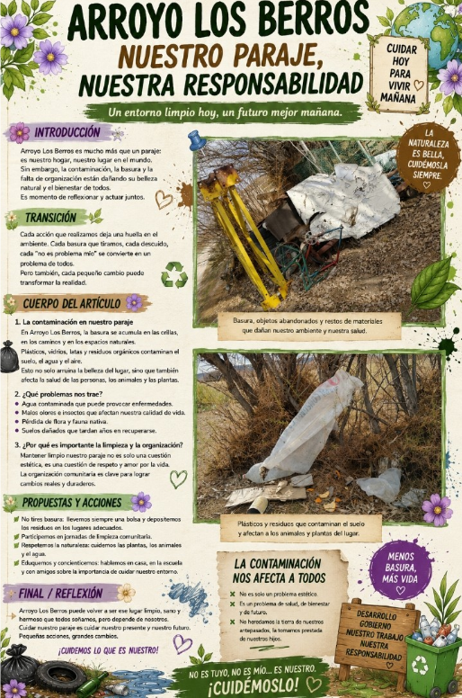

Nuestro Paraje, Nuestra Responsabilidad

Un entorno limpio hoy, un futuro mejor mañana. Arroyo Los Berros es mucho más que un paraje: es nuestro hogar, nuestro lugar en el mundo. Sin embargo, la contaminación, la basura y la falta de organización están dañando su belleza natural y el bienestar de todos. Es momento de reflexionar y actuar juntos.
Cada acción que realizamos deja una huella en el ambiente. Cada basura que tiramos, cada descuido, cada "no es problema mío" se convierte en un problema de todos. Pero también, cada pequeño cambio puede transformar la realidad.
La contaminación en nuestro paraje: En Arroyo Los Berros, la basura se acumula en las orillas, en los caminos y en los espacios naturales. Plásticos, vidrios, latas y residuos orgánicos contaminan el suelo, el agua y el aire. Esto no solo arruina la belleza del lugar, sino que también afecta la salud de las personas, los animales y las plantas.
¿Qué problemas nos trae?:
- Agua contaminada que puede provocar enfermedades.
- Malos olores e insectos que afectan nuestra calidad de vida.
- Pérdida de flora y fauna nativa.
- Suelos dañados que tardan años en recuperarse.
¿Por qué es importante la limpieza y la organización?: Mantener limpio nuestro paraje no es solo una cuestión estética, es una cuestión de respeto y amor por la vida. La organización comunitaria es clave para lograr cambios reales y duraderos.
Propuestas Y Acciones:
- No tires basura: llevemos siempre una bolsa y depositemos los residuos en los lugares adecuados.
- Participemos en jornadas de limpieza comunitaria.
- Respetemos la naturaleza: cuidemos las plantas, los animales y el agua.
- Eduquemos y concienticemos: hablemos en casa, en la escuela y con amigos sobre la importancia de cuidar nuestro entorno.
Final / Reflexión:
Arroyo Los Berros puede volver a ser ese lugar limpio, sano y hermoso que todos soñamos, pero depende de nosotros. Cuidar nuestro paraje es cuidar nuestro presente y nuestro futuro. Pequeñas acciones, grandes cambios. ¡CUIDEMOS LO QUE ES NUESTRO!